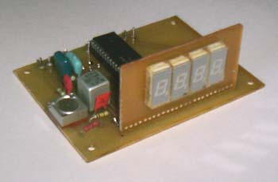
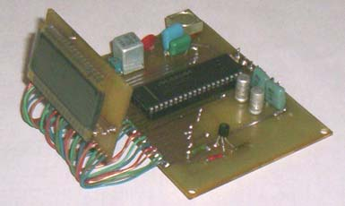
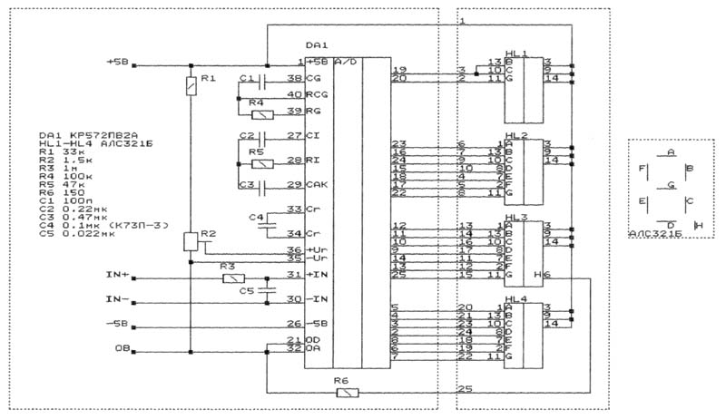
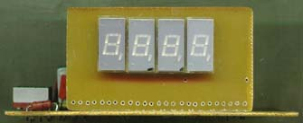
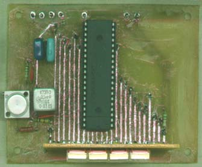
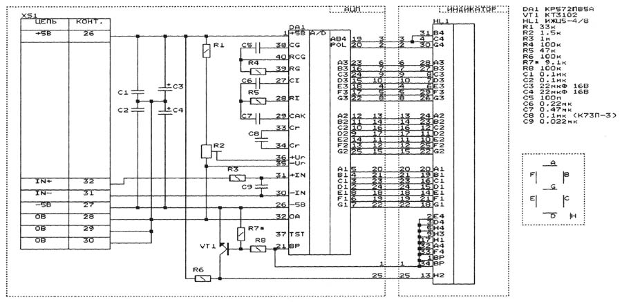
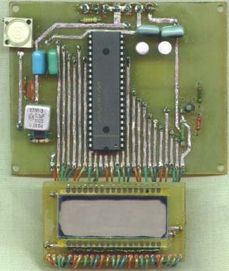
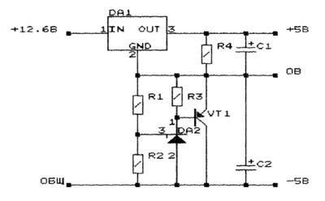

Встраиваемый цифровой вольтметр с диапазоном измерения -199.9 ... +199.9 мВ
 
Встраиваемый цифровой вольтметр может использоваться в качестве устройства индикации в измерительных приборах [5], для контроля выходного напряжения блоков питания, а также для совместной работы с различными электронными преобразователями [1, 2, 4, 7]. Разработаны два типа вольтметров - со светодиодным и жидкокристаллическим индикатором.
Вольтметр со светодиодным индикатором
Технические характеристики:
Схема электрическая принципиальная

Вольтметр собран по типовой схеме [6] на микросхеме DA1 КР572ПВ2А (аналог ICL7107), которая выполняет функцию аналого-цифрового преобразователя (АЦП) с двойным интегрированием, автоматической коррекцией нуля и определением полярности входного сигнала. К выходу микросхемы непосредственно подключается 3.5-декадное цифровое табло с 7-сегментными светодиодными индикаторами типа АЛС321Б (АЛС324Б). Источник опорного напряжения (ИОН) +100 мВ собран по схеме резистивного делителя R1R2, подключаемого непосредственно к источнику питающего напряжения +5 В, который должен иметь достаточную стабильность. Режим работы АЦП определяется параметрами навесных элементов R4, R5, C1 - C4. Измеряемое напряжение подается на контакты IN+, IN-, потенциал которых может быть произвольным в пределах диапазона питающих напряжений.
Конструкция
Вольтметр состоит из двух печатных плат, на одной из которых собран АЦП с навесными элементами, а на другой - цифровое табло. Платы могут крепиться друг к другу под необходимым углом или могут быть разнесены. Соединение осуществляется пайкой или с помощью кабеля.


Вольтметр с жидкокристаллическим индикатором
Технические характеристики:
Схема электрическая принципиальная

Вольтметр собран по типовой схеме [6] на микросхеме DA1 КР572ПВ5А (аналог ICL7106), которая выполняет функцию аналого-цифрового преобразователя (АЦП) с двойным интегрированием, автоматической коррекцией нуля и определением полярности входного сигнала. К выходу микросхемы непосредственно подключается 3.5-декадное цифровое табло с 7-сегментными жидкокристаллическими индикаторами типа ИЖЦ5-4/8. Источник опорного напряжения (ИОН) +100 мВ собран по схеме резистивного делителя R1R2, подключаемого непосредственно к источнику питающего напряжения +5 В, который должен иметь достаточную стабильность. Режим работы АЦП определяется параметрами навесных элементов R4, R5, C5 - C9. Измеряемое напряжение подается на контакты IN+, IN-, потенциал которых может быть произвольным в пределах диапазона питающих напряжений. Конденсаторы C1 - C4 выполняют роль фильтров в цепях питания. Схема на транзисторе VT1 обеспечивает подачу прямоугольных разнополярных импульсов на децимальную точку жидкокристаллического индикатора.
Конструкция
Вольтметр состоит из двух печатных плат, на одной из которых собран АЦП с навесными элементами, а на другой - цифровое табло. Платы могут крепиться друг к другу под необходимым углом или могут быть разнесены. Соединение осуществляется пайкой или с помощью кабеля.

Схема питания вольтметра от однополярного источника напряжением 12.6 вольт (аккумулятор)

Для получения двухполярного напряжения +5 вольт из однополярного +12.6 вольт (аккумуляторная батарея) используются два стабилизатора напряжения: последовательный - DA1 (КР142ЕН5А, 7805) и параллельный - DA2 (TL431). Транзистор VT1 (КТ837У) служит для повышения нагрузочной способности параллельного стабилизатора. Номиналы резисторов: R1 - 680 Ом, R2 - 680 Ом, R3 - 62 Ом, R4 - 300 Ом; конденсаторов: C1, C2 22 мкФ 16 В.
Состояние разработки:
Встраиваемый цифровой вольтметр предполагается использовать при конструировании различных измерительных приборов, работающих от сети переменного тока или бортовой сети автомобиля, источников питания и аккумуляторных батарей.
Ссылки:
18.08.2006
08.04.2007
17.07.2007
22.06.2010
Альтернативные источники
энергии
Компьютеры и
Интернет
Магнитные поля
Механотронные системы
Перспективные
разработки
Электроника и технология